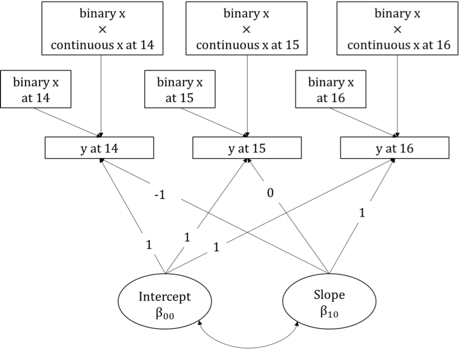
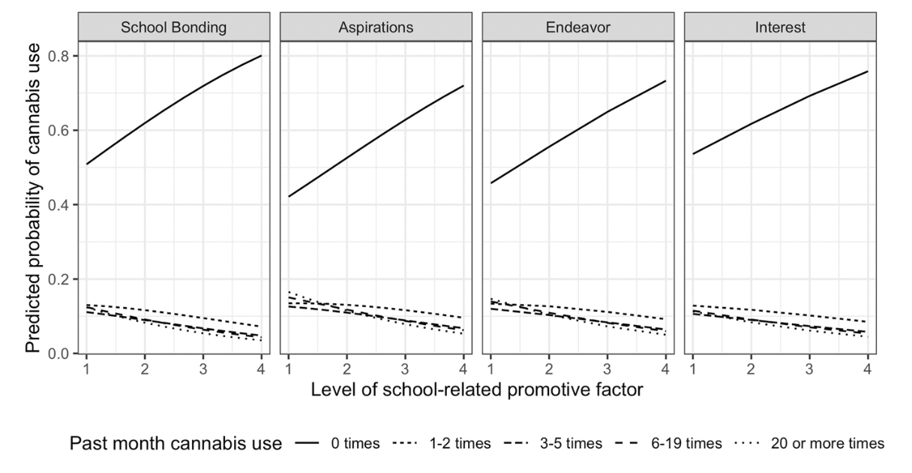
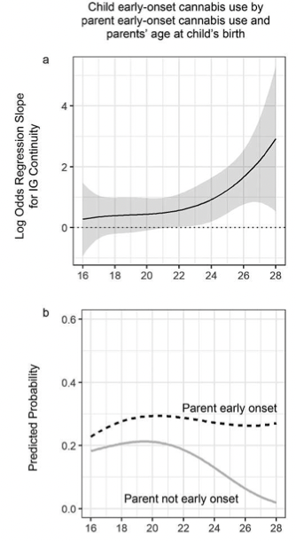

About me
Projects
Publications
Example Course Materials
Recent Publications

Two-Part Models for Father–Child Relationship Variables: Presence in the Child’s Life and Quality of the Relationship Conditional on Some Presence

School-related Promotive Factors Related to Cannabis Use Among American Indian Adolescents

Does Parents’ Age at First Birth Moderate Intergenerational Continuity in Early-Onset Cannabis Use?
No matching items